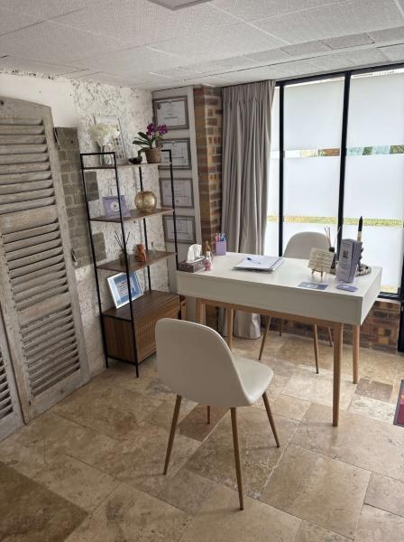

Accueil · À propos
À propos de moi
Bienvenue, je suis Corinne Lange
L'hypnose est ma façon de rendre ce monde plus lumineux.
Parce que chaque personne est unique, chaque accompagnement mérite de l'être aussi.
Mon parcours en hypnothérapie est le fruit d'une évolution professionnelle et personnelle.
J'ai exercé la profession d'assistante sociale pendant de nombreuses années. L'écoute, l'accompagnement et la relation humaine ont toujours occupé une place importante dans mon parcours.
Puis l'hypnose est entrée dans ma vie et est devenue, au fil du temps, une véritable évidence. J'ai choisi de m'y consacrer pleinement et de faire évoluer ma pratique pour pouvoir aujourd'hui vous accompagner à mon tour.
Mon parcours et mes formations
Je me suis formée à partir de 2019 à l'IFHE Paris. Au fil de mon parcours, je me suis formée à différentes approches :
- Hypnose ericksonienne
- Hypnose humaniste
- Thérapie Symbolique Avancée
- PNL
- Hypnose pour les enfants et les adolescents
- Hypnose transgénérationnelle
- Hypnose régressive
Je me suis également formée au RITMO, une méthode apparentée à l'EMDR, qui peut être utilisée dans l'accompagnement des personnes ayant vécu des événements difficiles ou traumatiques.
Ces différentes formations me permettent aujourd'hui de disposer de plusieurs outils et d'adapter mon accompagnement à chaque personne.


Une approche avant tout humaine
Je prends le temps de vous connaître, d'écouter votre histoire et de comprendre ce que vous souhaitez changer.
Il n'existe pas de méthode unique qui conviendrait à tout le monde. Votre histoire, votre personnalité et votre objectif sont au cœur de l'accompagnement.
Mon rôle est de vous accompagner avec bienveillance, sans jugement, et de vous aider à mobiliser vos propres ressources pour avancer vers le changement que vous souhaitez.
Une curiosité qui ne m'a jamais quittée
Dans ma sphère personnelle, j'ai toujours été curieuse des différentes approches permettant de mieux prendre soin de soi et de devenir acteur de son bien-être.
L'hypnose est devenue pour moi une véritable passion : une façon d'accompagner l'autre, de l'aider à explorer ses ressources et à ouvrir de nouvelles possibilités.
Et la personne derrière l'hypnothérapeute ?
Je suis une personne naturellement aidante et profondément attachée à l'humain.
J'aime voir les personnes évoluer, retrouver leurs ressources et avancer vers ce qui leur correspond. Et lorsque je ne suis pas dans mon cabinet, vous me trouverez volontiers au contact de la nature.
J'aime particulièrement les orchidées, les chats et les loups, qui représentent pour moi des univers très différents : la beauté, la douceur, mais aussi la liberté et le mystère du monde sauvage.
Aujourd'hui, c'est à vous que je souhaite transmettre cette passion.
Je ne crois pas que nous soyons obligés de rester enfermés dans ce qui nous fait souffrir ou nous limite. Parfois, un changement commence simplement par une rencontre, une prise de conscience ou l'envie d'essayer autrement.
Si vous souhaitez avancer vers un changement dans votre vie, je serai heureuse de vous accompagner sur ce chemin, à votre rythme et dans le respect de votre histoire.
Ensemble, faisons évoluer votre vie vers le meilleur.